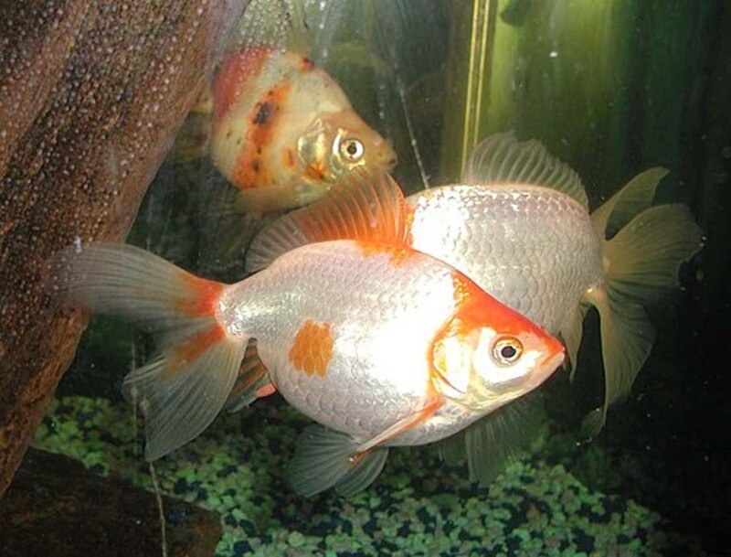

Рыбы (лат. Pisces) — обширная группа водных челюстноротых позвоночных животных, ранее считавшаяся надклассом позвоночных, ещё ранее — классом. Рыбы характеризуются жаберным дыханием на всех этапах постэмбрионального развития организма. С точки зрения кладистики четвероногие являются специализированными лопастепёрыми рыбами. Тем не менее, поскольку традиционно понятие «рыбы» относится к парафилетической группе, не включающей четвероногих, в современной систематике рыбы отсутствуют как таксон.
Рыбы обитают как в солёных, так и в пресных водоёмах — от глубоких океанических впадин до горных ручьёв. Рыбы играют важную роль в большинстве водных экосистем как составляющая пищевых цепей. Многие виды рыб употребляются человеком в пищу и поэтому имеют большое промысловое значение. Современные рыбы имеют размеры от 7,9 мм (Paedocypris progenetica) до 20 м (китовая акула). В мире известно 35 768 видов рыб (по состоянию на 2020 год), однако постоянно описываются новые — каждый год описывается около 300—500 новых для науки видов. В России обитает около 3000 видов, в том числе в пресных водах встречается более 280 видов. Изучению рыб посвящён раздел зоологии — ихтиология.
Считалось, что наиболее древние бесчелюстные животные, напоминающие рыб, известны из раннего ордовика (около 450—470 млн лет назад). Тем не менее в 1999 году в китайской провинции Юньнань были найдены окаменелости рыбообразного существа Haikouichthys из группы бесчелюстных возрастом около 530 миллионов лет (ранний кембрий). Возможно, подобные формы были предками всех позвоночных. Отличием первых рыб от бесчелюстных стали челюсти, производное одной из жаберных дуг. Кроме челюстей, рыбы имеют парные плавники, внутреннее ухо с тремя полукружными каналами и жаберные дуги. Несмотря на появление первых челюстноротых рыб ещё в ордовике, они занимали подчиненное положение вплоть до девона. Таким образом, рыбы и бесчелюстные существовали больше 100 млн лет в условиях преобладания бесчелюстных, в отличие от настоящего времени. Хрящевые рыбы появились на рубеже силура и девона, около 420 млн лет назад, и достигли расцвета в карбоне. Лопастепёрые рыбы обитают в мировых океанах как минимум с девона; не исключено, что они существовали уже в силуре. Guiyu oneiros — самая ранняя известная лопастепёрая рыба. Более половины всех живущих ныне видов позвоночных, а именно, согласно базе данных FishBase, около 31 тысячи видов, относятся к рыбам. Число признанных видов продолжает меняться вследствие открытий новых видов, а также таксономических ревизий отдельных групп. Ныне живущие рыбы представлены тремя классами: хрящевые рыбы (Chondrichthyes), лопастепёрые (Sarcopterygii) и лучепёрые рыбы (Actinopterygii). Два последних класса составляют группу костных рыб. Современных хрящевых рыб делят на два подкласса: Holocephali (цельноголовые) и Elasmobranchii (пластиножаберные, куда входят акулы и скаты). Ныне существует 900—1000 видов хрящевых рыб.